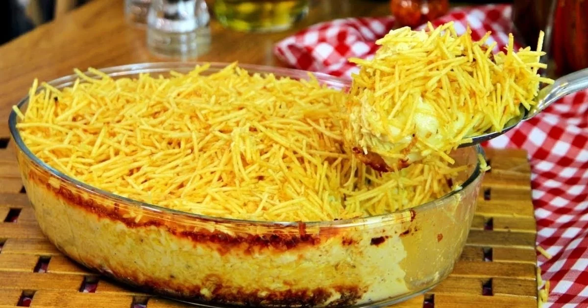

Fricassé de Frango


Tempo de Preparo
30 minutos

Número de Porções
5 porções
Fricassé de Frango

Ingredientes
- 1 lata de creme de leite
- 1 lata de milho verde
- 1 copo de requeijão cremoso
- 100 g de azeitona sem caroço
- 200 g de mussarela fatiada
- 2 peitos de frango desfiados
- 100 g de batata palha
- 1 xícara de água
- 1 pitada de sal
Fricassé de Frango
- Bata no liquidificador o milho, o requeijão, o creme de leite e a água.
- Refogue o creme do liquidificador com o frango desfiado, as azeitonas e o sal até ficar com uma textura espessa.
- Coloque o refogado numa assadeira, cubra com mussarela e espalhe a batata palha por cima.
- Leve ao forno até borbulhar.
- Sirva com arroz branco.
- Bom apetite!